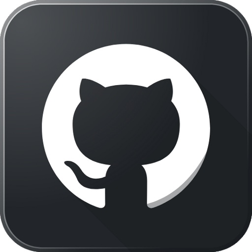
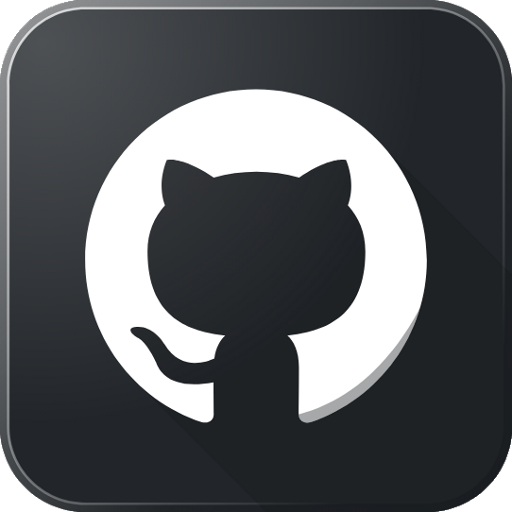

Oh! Hi, there.
Well, this is a bit awkward.
I wasn't expecting visitors, so there isn't much to see here.
Since you went through all the trouble of visiting, I guess I should make an effort.
I need to set up some things, then. Don't go anywhere!
You know.. I'll be honest with you: I've never really liked HTML and css. They are too dull and not really challenging and technical enough for my taste. I'm not sure I even want to bother coding this up for you. Sure, you're probably an awesome person, and I want to make a good impression, but.. If I make an impression is by doing something I would not otherwise do, it will end up a false one. I'm not really a front-end guy.. I'd much rather do something technical and object-oriented. If only there was a way...
Kotlin can do Javascript! I'll go whip something up ... I'm ready now! You may enter. Welcome!

 


Can I justify being lazy, If I'm a skeleton of what I could be? A fool is someone who ignores information because it disagrees with desired results. Sometimes a hypocrite is nothing more than a person who is in the process of changing. Love is like air: you only notice it when you don't get enough. There are 3 things all wise men fear: the sea in storm, a night with no moon, and the anger of a gentle man. A long stretch of road will teach you more about yourself than 100 years of quiet introspection. This too shall pass. Being nervous only makes you suffer twice. Answers were always important, but they were seldom easy. We’re all quietly broken in our own strange ways. A good programmer is one who writes code. Sometimes, asking for help is the biggest hurdle in solving a problem. Ambition is like salt, Add a little and your meal improves, add a lot and it becomes impossible to eat. There is no such thing as a free lunch. Teaching someone else can be the most valuable tool in teaching yourself. Worrying is as effective as trying to solve an algebra equation by chewing bubblegum. Sometimes you're ahead, sometimes you're behind. The race is long, but in the end you're only racing yourself. Remember compliments you receive, forget the insults.